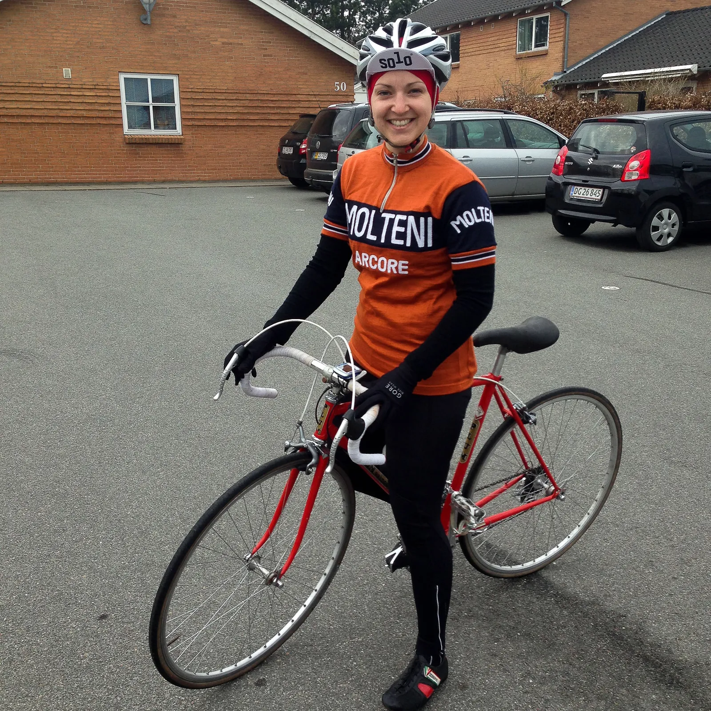

Fredagspigen à la Squadra Molteni

Squadra Molteni vil gerne i anledningen af fredagen, præsentere holdets helt egen fredagspige: Maria.
Udover at være holdets smukkeste medlem, er hun også soigneur
- fan
- torta mama
- indpisker
- humørspreder
- kok
- en helt igennem god pige
- og så kører hun stærkt på cykel
Det har hun bevist med sejre i både Grand Prix Vejle Ådal og den frygtede Molteni Sprinten.
Maria cykler både moderne og vintage, fordi for Maria er det ikke så komplekst, for som hun selv siger: “Jeg kan bare godt lide cykling”.

Hvis Shelley Verse var den første kvindelig soigneur i professionel cykelsport, så må Maria kalde sig for den første kvindelige soigneur i vintage-cyklingen :-).
God fredag.
Med venlig hilsen Squadra Molteni og Maria.